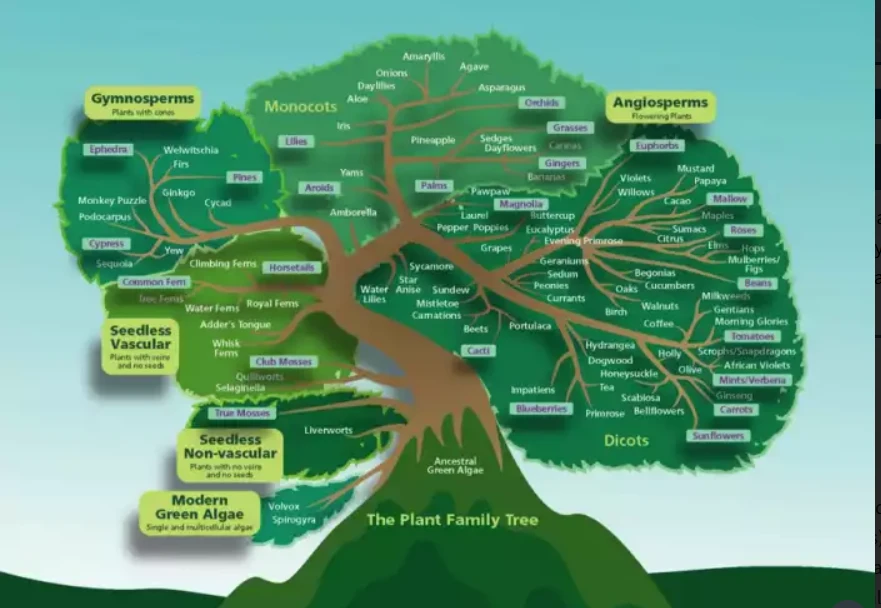
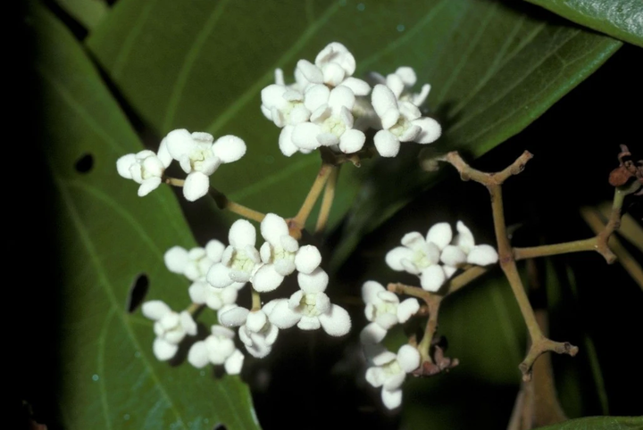
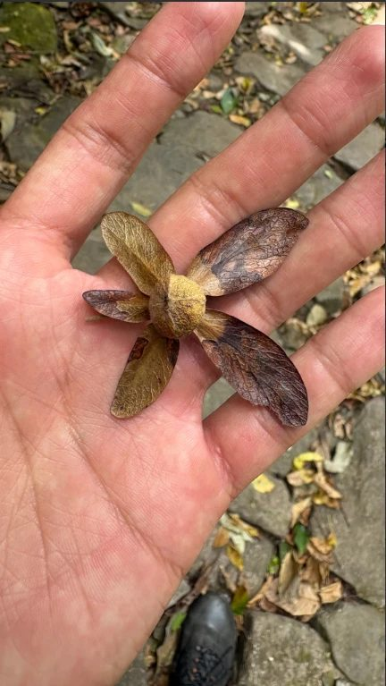
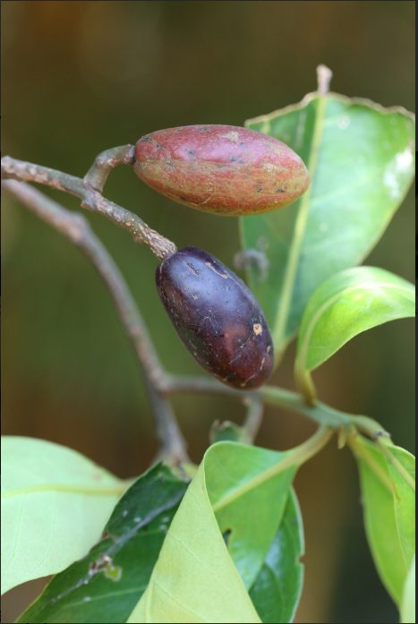
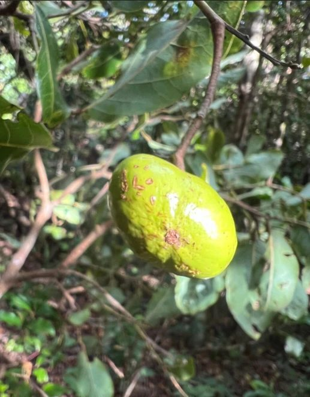
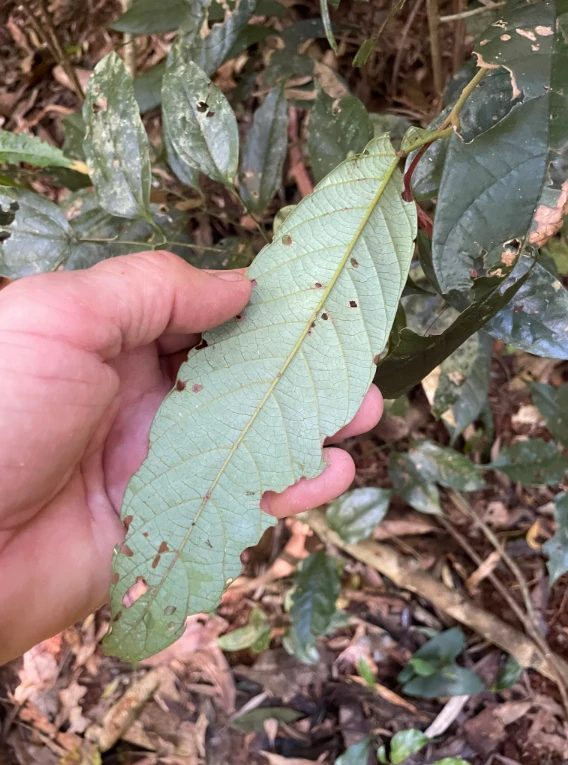

Level 1 · broadest
Family
A large group of related plants that share key features, such as the shape of their flowers and fruit. Example: Dipterocarpaceae.
View 2 familiesPl@netMatrixExplore · Identify · Protect
All plants share a common ancestor, but they have branched out over millions of years. Both of our featured families are flowering plants. On the tree below, laurels sit on the branch beside Magnolia, while dipterocarps belong with the other dicots, close relatives of mallows and cacao.

The Explorer works like a small plant encyclopedia. Scientists sort every living plant into groups, from very broad to very specific. On this site we focus on three of those levels: families, genera and species. Each level is linked to the others, so you can start with a family and move down to its genera and species, or start with a species and work your way back up.
We have chosen two plant families that are well represented in Malaysian forests. The Dipterocarpaceae family includes many of the giant trees that form the rainforest canopy and supply valuable timber. The Lauraceae family, also called the laurel family, contains aromatic trees and shrubs whose leaves and bark often smell spicy when crushed; cinnamon, bay leaf and avocado all belong to it. Several members of both families are now considered endangered, rare or threatened.
Both families also reach far beyond Malaysia. The genera and species featured here come from Southeast Asia, Africa and the Americas, showing how widely these plant groups have spread across the tropics and warm parts of the world.
This map shows how every plant on Pl@netMatrix is connected. Start at a family, follow the line down to its genera, then down again to its species. Select any box to jump straight to that plant's section.
Scientists sort every plant into levels, from very broad to very specific. Pl@netMatrix uses three of them, and each has its own page.
Level 1 · broadest
A large group of related plants that share key features, such as the shape of their flowers and fruit. Example: Dipterocarpaceae.
View 2 familiesLevel 2
A smaller group of closely related species inside a family. Its name is always written first in a scientific name. Example: Dipterocarpus.
View 4 generaLevel 3 · most specific
A single kind of plant. Its two-part name joins the genus with a species name. Example: Dipterocarpus alatus.
View 8 speciesOnce you have explored, use these two pages to name a plant you found or see what others have shared.
Point at a card, or tab to it with the keyboard, to turn it over and meet the species.

Native to: South and Southeast Asia
A tall riverside tree tapped for its oily resin.
See species
Native to: Bangladesh and mainland Southeast Asia
Its leaves are used to wrap goods and cover huts.
See species
Native to: South-central Africa
A shrub or small tree of miombo woodland and savanna.
See species
Native to: South-central Africa
A small tree, common in miombo woodland on sandy soil.
See species
Native to: Chile
A threatened, frost-tolerant tree with sweet, edible fruit.
See species


Select a photo to see it larger.







| Family | Genus | Species |
|---|---|---|
| Dipterocarpaceae | Dipterocarpus | Dipterocarpus alatus, Dipterocarpus tuberculatus |
| Monotes | Monotes adenophyllus, Monotes glaber | |
| Lauraceae | Beilschmiedia | Beilschmiedia berteroana, Beilschmiedia costaricensis |
| Cryptocarya | Cryptocarya adpressa, Cryptocarya alba |
Dipterocarps and laurels can grow side by side in the same forest. Use this chart to spot the differences. Point at a row to highlight it.
| Dipterocarpaceae Dipterocarp family | Lauraceae Laurel family | |
|---|---|---|
| Fruit | A hard nut with papery wings that spin in the wind | A one-seeded, berry-like fruit, sometimes sitting in a small cup |
| Leaves | Large, stiff leaves with straight, evenly spaced side veins | Glossy, leathery leaves, sometimes with three main veins |
| Smell | Sticky, fragrant resin oozes from cuts in the bark | Leaves and bark smell spicy or citrusy when crushed |
| Size | Many are 40 to 70 metres tall; the tallest known is 93 metres | Mostly evergreen trees and shrubs; a few are parasitic vines |
| Seeds spread by | The wind, as the winged fruits twirl down | Birds and animals that eat the berries |
| Found in | Tropical Asia, Africa and South America; richest in Borneo | Warm and tropical regions all over the world |
| Uses | Valuable timber such as meranti and keruing, and resin | Spices and food: cinnamon, bay leaf, camphor and avocado |
| Genera on this site | Dipterocarpus, Monotes | Beilschmiedia, Cryptocarya |
Test what you have learned. Look at each photo, decide on your answer, then select Show answer to check.
Question 1 of 6
Dipterocarpaceae. The family name means "two-winged fruit". The wings make the fruit spin like a helicopter as it falls. Find out more
Question 2 of 6

Lauraceae. A fleshy berry sitting in a cup is one of the easiest ways to recognise a laurel. Find out more
Question 3 of 6
Yes, Dipterocarpaceae. It belongs to Monotes, an African dipterocarp. Its five wings are all about the same size. Find out more
Question 4 of 6

Lauraceae. This leaf comes from a Cryptocarya, one of the laurel genera on this site. Find out more
Question 5 of 6

Dipterocarpaceae. This is Dipterocarpus tuberculatus. In Cambodia its leaves are used to wrap goods and cover huts. Find out more
Question 6 of 6

Lauraceae. Three main veins from the base are typical of cinnamon-type laurels. Find out more
Found one of these in the wild? Identify it from a photo or see what other plant spotters have found.
Dipterocarpaceae: a young plant on the rainforest floor with straight, evenly spaced leaf veins.
Lauraceae: small, creamy-white flowers growing in branching clusters.
Genus: the five-winged fruit of Monotes.
Genus: the olive-shaped fruit of Beilschmiedia.
Genus: the "hidden nut" fruit of Cryptocarya.